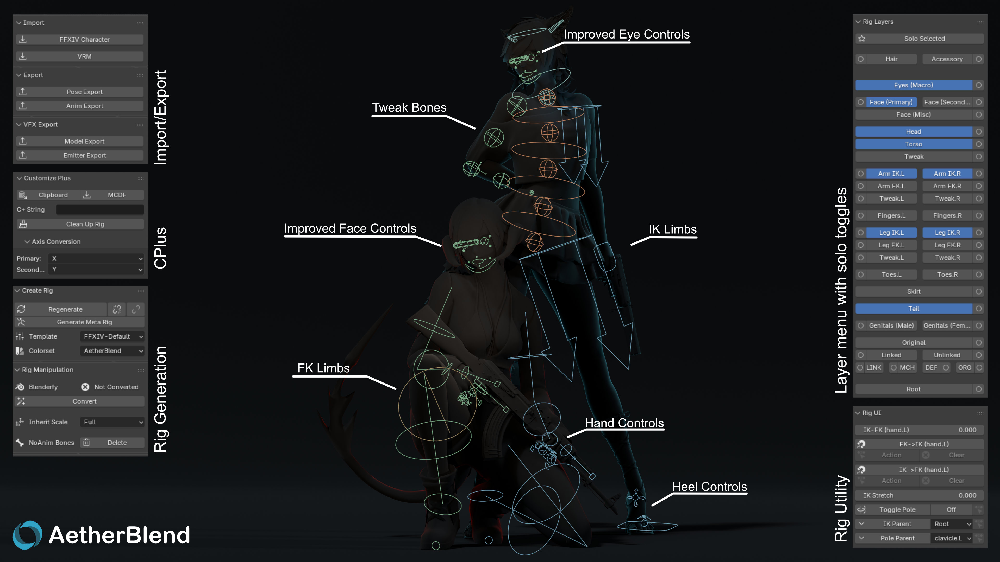

AetherBlend is a plugin designed for posing and animation of character models from Final Fantasy XIV in Blender.
Note: AetherBlend is currently in beta and some features may not work as intended.

AetherBlend is a plugin for Blender built to allow the animation of character models from Final Fantasy XIV. It generates an armature using custom rigging and existing rig types provided by Blender's Rigify add-on. The generation process is dynamic and thus highly compatible with most player character and humanoid non-player character armatures. AetherBlend was built with modding in mind, meaning that poses and animations created using it can easily be imported into the game using existing tools such as Brio, XAT and VFXEditor.
Our goal is to make custom FFXIV characters animation-ready in Blender: generate a character-scaled, industry-standard rig while preserving modding and GPosing support. AetherBlend also includes tools for FFXIV VFX creation. IK-rig pose and animation import and Aetherbridge (streaming Blender animations into the game, with lighting and camera syncing planned) are still in development, while we continue to refine our editable, modular rig templates.
Requirements and how to install the add-on.
Setup, guidelines and release in one short page.
Edit the documentation, build the site and preview it in VS Code.
Conventions for contributing code.
Every operator, its parameters and what it does.
A heartfelt thank you to Oats, my official Co-Dev. Working with her on developing and maintaining AetherBlend has been an absolute privilege. She played a crucial role in getting our beta release across the finish line and continues to go above and beyond helping our community members on Discord every single day. I genuinely couldn't have done this without her, and I'm incredibly excited for everything we'll accomplish together!
Zed and CC, two of my very closest friends that let me yap for countless hours about issues with this project and kept motivating me to go on. Really without them I think I wouldnt have finished it, thank you!
PassiveModding - Thanks for Meddle, and Meddle Tools, while not being a requirement, these tools brought me back to actually bringing my characters into Blender and making me want to create a better Animation solution.
sleepybunny for providing an excellent base for the C+ application with bustomize
Ofcourse everyone that showed interest in not only AetherBlend but also Mektools and Mythtools aswell as all my supporters on Patreon. I have pushed content creation away just to work on these other tools, yet you kept supporting me and im more then thankfull for that!